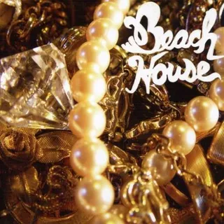
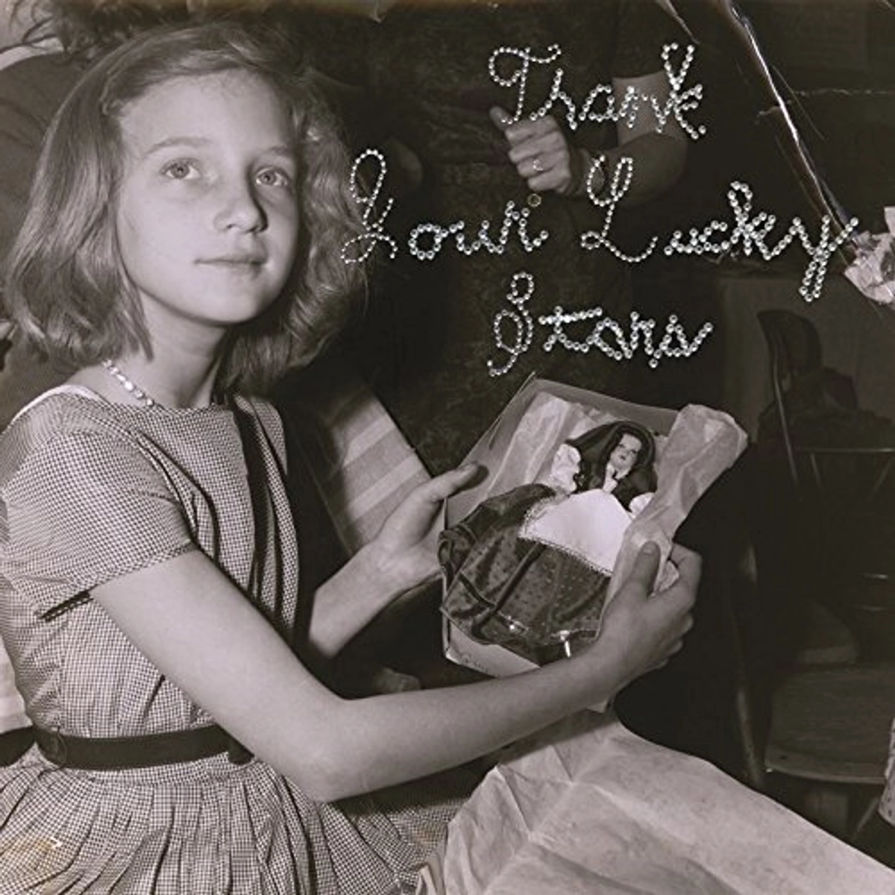

Origines

Beach House se forme en 2004 à Baltimore dans le Maryland. Il est composé de Alex Scally à la guitare et aux claviers et de Victoria Legrand — par ailleurs nièce du compositeur français Michel Legrand — au chant et aux claviers. Le groupe débute comme un simple projet studio. Un premier album homonyme voit le jour le 3 octobre 2006 sur le label Carpark. Cet album obtient un bon succès critique en se classant, par exemple, seizième sur la liste des 50 meilleurs albums de 2006 établie par Pitchfork1. Le même magazine évoquant les influences de Mazzy Star, Spiritualized, Galaxie 500 et Slowdive pour décrire l'album2.
Beach House sort un deuxième album, en 2008, Devotion qui comprend, outre le single Gila, une reprise du titre Some Things Last a Long Time originellement interprété par Daniel Johnston3. Ils collaborent avec Grizzly Bear sur le morceau Slow Life 4, titre qui est présent sur la bande originale du film Twilight New Moon.
